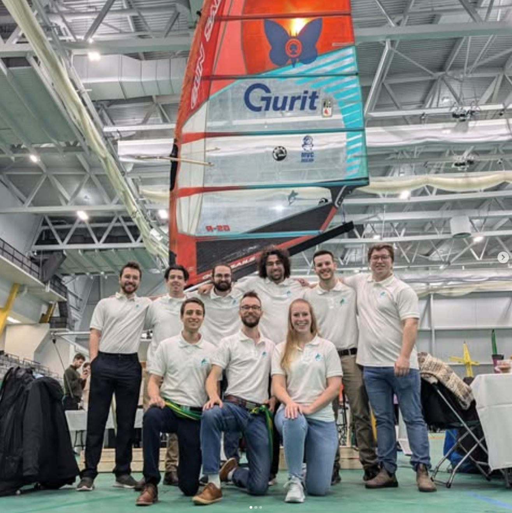
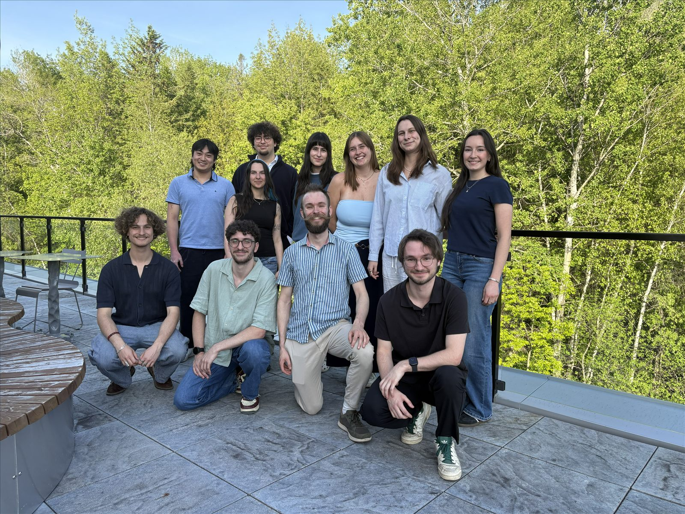

De l'idée ambitieuse au Moth à foils le plus intelligent jamais conçu par des étudiants. Retour sur le parcours de MARLIN depuis ses débuts.
Tout commence comme un projet de fin de baccalauréat en génie mécanique. Portés par une passion pour la voile et le milieu maritime — peu couvert à l'université — des finissants conçoivent un premier voilier à foils de classe Moth, entièrement démontable.
Le 28 janvier 2025, le projet est reconnu comme groupe technique de l'Université de Sherbrooke. Sa mission : sensibiliser les étudiants en génie à l'écoresponsabilité tout en démocratisant la voile au Québec.

Le groupe technique reprend le voilier fonctionnel issu du projet de fin de bac et entreprend de l'améliorer. Le défi : minimiser le poids pour en faire une embarcation de performance, tout en restant écoresponsable.
Conception sous SolidWorks, optimisation des profils de foils par CFD, et analyse de cycle de vie pour réduire l'impact environnemental de chaque choix de matériau. Le projet n'a jamais de fin : il s'améliore d'année en année.

Les résultats de simulation sont validés en bassin d'essai. La fabrication du premier prototype de coque en matériaux composites débute. Les foils optimisés sont usinés et assemblés.
Le système de contrôle embarqué est testé sur banc d'essai : capteurs IMU, jauges de contrainte et communication temps réel entre les modules.
L'intégration finale réunit tous les sous-systèmes : coque, foils, électronique embarquée et acquisition de données. Les essais en eau libre, avec le Club de voile Memphrémagog, permettent de calibrer le bateau en conditions réelles.
Direction l'Italie pour le SuMoTh International Challenge — l'Université de Sherbrooke devient l'une des premières équipes nord-américaines à y participer, prête à montrer qu'on peut voler vite et durablement.
Les moments forts du projet MARLIN — de la conception à la réalisation.